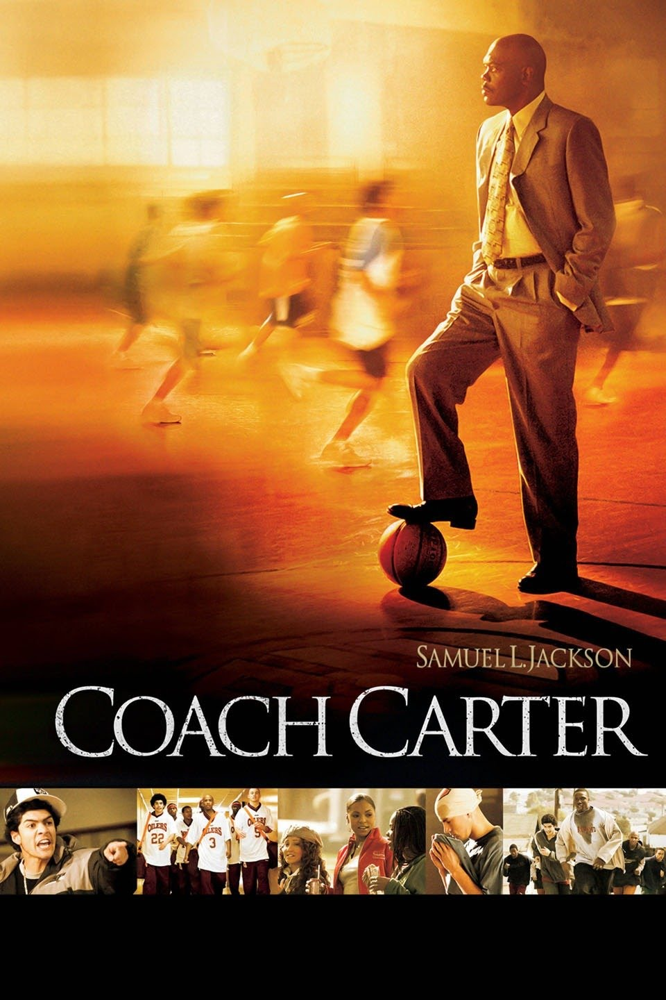

Ken Carter lives in Richmond, California. He becomes the coach for Richmond High School’s basketball team, the Richmond Oilers, having played for the team thirty years earlier. Initially, the team is rowdy, rude, and disrespectful. Carter gives the team contracts to sign and obey, requiring them to sit in the front rows of all their classes, and maintain a 2.3 (C+) grade point average. Carter asks the school's staff for progress reports of the players' grades and attendance. Despite anger from the players' parents, most players sign the contracts, though several team members walk out in disagreement, including Timo Cruz, a gifted player who also deals drugs for his cousin Renny. The school's principal, Principal Garrison, questions Carter's contracts, suggesting that the players will be unable to meet his conditions and that he would be better off sticking to coaching basketball.
Carter begins a strict, disciplinary training regime for the team, focused largely on conditioning and teamwork. Carter's son Damian joins the team, switching from the private school St. Francis, to play for his father. Cruz witnesses the team win a game, afterwards asking Carter to let him rejoin the team. Carter agrees, but only if Cruz completes a set number of exercises before that Friday. Cruz commits himself to this, though when it looks like he will fail, the rest of the team supports him and he is able to rejoin.
Kenyon Stone, the team's captain, struggles to come to terms with his girlfriend Kyra being pregnant. Kenyon is one of the few players on the team that takes school and going to college seriously. He is one of the most gifted players on the team and never argues with Carter. Kenyon’s relationship with Kyra becomes strained, leading the couple to have a falling out over Kenyon's inability to commit to fatherhood. Another player, Junior Battle, skips classes, leading Carter to suspend him from the team. Battle's mother Willa visits Carter, asking him to let Battle back on the team. Carter agrees after Battle apologizes.
The team continues to train and improve, bonding with Carter and becoming undefeated in the regular season. After winning the Bay Hill holiday tournament, the entire team sneaks out of the motel to attend a party at a nearby mansion while Carter is speaking to his wife on the phone. Carter discovers their absence, crashing the party to round up the team. Carter berates the boys on the way home, though Cruz points out the team are now winners as Carter intended. Later, Carter discovers the team have not been keeping to their contracts, skipping classes and receiving poor grades.
A livid Carter locks the gym, directing the team to the library where they will study with their teachers until their grades improve. A disillusioned Cruz quits the team again. Carter enforces his lockdown, garnering media attention after he forfeits several games, enraging the local community. Carter reasons that aside from basketball, the boys have no other options in Richmond aside from crime, and he is hoping their commitment to their studies will give them better options in life.
After a drug deal goes bad, Cruz watches Renny gunned down in front of him. Distraught, Cruz goes to Carter, begging to be let back on the team. The school board hold a hearing, where Carter explains his rationale, and promises to resign if the lockdown is lifted. Though Principal Garrison and the board's chairwoman vote in his favor, every other councilor votes to end the lockdown. Carter prepares to leave, but discovers the team is refusing to play, choosing to continue with their studying and hold to their goal. Cruz, whom Carter had repeatedly asked "what is your greatest fear," answers by quoting from A Return to Love.
Carter decides to stay, and the team soon succeeds in their academic goal. Kenyon reunites with Kyra, learning she has had an abortion. They make up, and Kenyon asks Kyra to come with him to college, to which she agrees. The team play in the State Quarter finals match against St. Francis, but lose by two points. Though they did not win, Carter expresses his pride that the team came together to persevere, give themselves options, and achieve the "ever elusive victory within." The film ends with the team celebrating with the community, as graphics explain how six players went on to college.